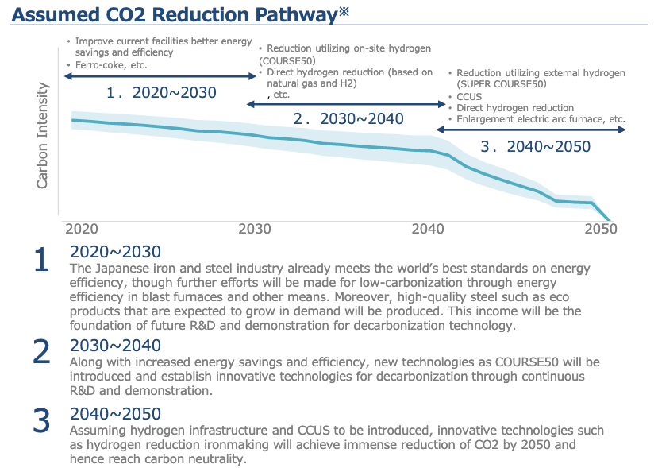

Looking Back on 2015
05/06 2022
Author: Hideka Morimoto
The United Nations General Assembly adopted the Sustainable Development Goals (SDGs) in September, and the Paris Agreement was adopted at COP21 in December. In the same month, the TCFD (Task Force on Climate-related Financial Disclosures) was established under the Financial Stability Board (FSB) at the request of the G20 Finance Ministers and Central Bank Governors.
These three events are connected in the bottom line.
The SDGs are aimed at overcoming the limitations of "balancing the environment and the economy. Based on the reflection that "balancing the environment and the economy" alone will never benefit everyone and will not achieve sustainable development, the concept of "simultaneous solutions to environmental, economic, and social problems" was formulated with a strong determination to "leave no one behind. It also strongly emphasized that poverty, hunger, and other issues that had previously been the responsibility of international organizations and countries were now the responsibility of corporations.
The Paris Agreement and the IPCC's "Global Warming of 1.5°C " provided the impetus for countries and companies to move toward 2050 CN (carbon neutral). After a year and a half of discussions, the TCFD released its "Recommendations" in June 2017, which will guide the realization of the SDGs, ESG investment, and the flow of funds toward 2050 CN. In Japan, the Corporate Governance Code (CGC) has been revised, and compliance with the TCFD has become a requirement for participation in the Prime Market, which has the most stringent listing criteria and is positioned as the top market in the Tokyo Stock Exchange.
The EU is trying to "institutionalize" this trend further by making ESG measures mandatory for public disclosure and unifying evaluation criteria, based on a "taxonomy" as the axis, in order to control the flow of private capital and strongly guide corporate behavior through corporate evaluation. In addition, it plans to introduce the Carbon Border Adjustment Mechanism (CBAM) and aims to spread EU rules globally as a de facto standard to become a winner in the market. Another interesting move is the collaboration between China and the EU to form a common taxonomy, the Common Ground Taxonomy.

Note: This only illustrates the assumption of overall Japanese iron and steel industry’s decarbonization pathway. In reality, decarbonization will be achieved based on each company’s long-term strategy and hence, will not necessary be the reflection of this assumption.
Japan, despite its many outstanding technologies and industries, seems to be lagging behind in these developments. I have been paying attention to the concept of "Taxonomy for Transition," which was raised in the Green Innovation Strategy Promotion Council, of which I am a member. The concept is to draw up a steady and strategic transition scenario toward 2050 CN in broad cooperation with Southeast Asia, Australia, India and other countries. If the EU taxonomy is "two-dimensional" and "static," this concept is "three-dimensional" and "dynamic. This is the path that Japan should take. I believe that this is the path that Japan should pursue.